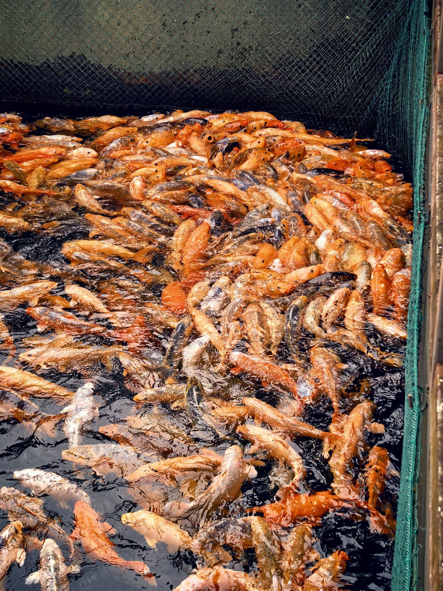

🐟嘬嘬嘬～大鱼嘟着嘴嘬嘬好可爱的…呆呼呼的喵🥰
金赤焰橙的舞动漩涡～上次看到这样活泼的鱼儿们还是咱小时候，在湖边用面包屑喂金鱼…那个湖都不在了呢，不知道那些鱼儿们的归宿是怎样的呀…
记忆里的壮观可能套了一层回忆的滤镜吧…但是面前涌动的大锦鲤们可是真实的，好喜欢这些灵动的小家伙呀😘

金赤焰橙的舞动漩涡～上次看到这样活泼的鱼儿们还是咱小时候，在湖边用面包屑喂金鱼…那个湖都不在了呢，不知道那些鱼儿们的归宿是怎样的呀…
记忆里的壮观可能套了一层回忆的滤镜吧…但是面前涌动的大锦鲤们可是真实的，好喜欢这些灵动的小家伙呀😘

大肥鱼🐟～🥰一池肥嘟嘟的巨大锦鲤堆在一起扑腾…好可爱୯(*´ω｀*)୬
远看像一锅煮沸的熟虾🦐😵💫…密恐警告）撒一点鱼食大可爱们就会高速蹿过来，翻涌着搅成赤橙色漩涡使劲蹦哒…被挤出水面了再疯狂扭动滑下去😇真的有这么饿嘛好可怜…
滑溜溜也很萌…想钻进水里找条大的抱着挼☺️ https://t.co/Z0Xekt2SVy
远看像一锅煮沸的熟虾🦐😵💫…密恐警告）撒一点鱼食大可爱们就会高速蹿过来，翻涌着搅成赤橙色漩涡使劲蹦哒…被挤出水面了再疯狂扭动滑下去😇真的有这么饿嘛好可怜…
滑溜溜也很萌…想钻进水里找条大的抱着挼☺️ https://t.co/Z0Xekt2SVy